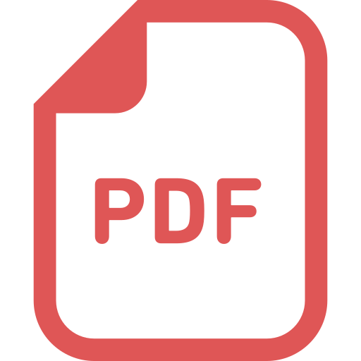

日高 拓真- Takuma Hidaka
- 所属
-
筑波大学大学院 理工情報生命学術院 システム情報工学研究群 情報理工学位プログラム
-
IPLAB WAVEチーム (志築文太郎 教授 指導)
- 研究の興味
- Human Interface
- 連絡先
- hidaka[at]iplab.cs.tsukuba.ac.jp
- 略歴
- 2014年(平成26年)
鹿児島県立鹿屋高等学校 入学
- 2017年(平成29年)
鹿児島県立鹿屋高等学校 卒業
- 2017年(平成29年)
筑波大学 情報学群 情報メディア創成学類 入学
- 2021年(令和3年)
筑波大学 情報学群 情報メディア創成学類 卒業
- 2021年(令和3年)
筑波大学 大学院理工情報生命学術院 システム情報工学研究群 情報理工学位プログラム 入学
文献情報
学位論文
-
学士論文，学士（情報メディア科学）
手におけるファントムセンセーションを用いた通知
筑波大学 情報学群 情報メディア創成学類，2021年2月，35 pages．

PDF
国内会議論文(査読なし)
-
日高拓真，清佑輔，志築文太郎
手・指におけるファントムセンセーションを用いた通知のための事前実験設計
第25回一般社団法人情報処理学会シンポジウム インタラクション2021，
情報処理学会，2021年3月，pp. 607-610．
PDF
-
三縄香織，漆山裕太，日高拓真，志築文太郎
ディスプレイ上に表示されるボタンに対する非接触滞留ジェスチャによる選択性能の調査
情報処理学会 第83回全国大会，情報処理学会，2021年3月，pp. 4:287-4:288．
PDF
-
日高拓真，志築文太郎
通知としてファントムセンセーションを提示するデバイスの試作
第29回インタラクティブシステムとソフトウェアに関するワークショップ（WISS2021），
日本ソフトウェア科学会，2021年12月，3 pages．
PDF
-
西川 宜利，日高 拓真，志築 文太郎
ハンドジェスチャ学習のための電気的筋肉刺激を与えるグローブ型デバイスの試作
第29回インタラクティブシステムとソフトウェアに関するワークショップ（WISS2021），
日本ソフトウェア科学会，2021年12月，3 pages．
PDF
国際会議論文(査読あり)
-
Takuma Hidaka，Yusuke Sei，Buntarou Shizuki
Pilot Study on Notification Using Phantom Sensation on Hand
CHI 2021 symposia on Asian CHI Symposium: HCI Research from Asia and on Asian Contexts and Cultures,
May 2021, pp. 157-159.
 ACM
PDF
ACM
PDF
表彰
-
令和2年度 筑波大学 筑波大学校友会賞，2021年3月25日．
学業
-
学生メンタ「情報メディア実験A・B」，筑波大学情報メディア創成学類，2020年5月-2021年1月
インターンシップ・パートタイム
-
ヤフー株式会社 1weekインターン（2021/8, 9）
-
楽天株式会社 二子玉川夏の陣2021 プロダクト開発コース（オンライン）（2021/9）
奨学金
-
独立行政法人 日本学生支援機構（JASSO）第一種奨学金（貸与型無利子），2021年4月-
ティーチングアシスタント
-
「プログラミング入門A・B」，筑波大学情報メディア創成学類，2021年10月-2022年2月
-
「情報メディア実験A・B」，筑波大学情報メディア創成学類，2022年4月-